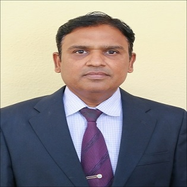

Designation : Associate Professor
Department:Electronics and Computer Engineering
Date of joning : 21/07/2010
Qualifications :
UG:B.E.
Computer(Distinction)
PG:M.E.CSE(Distinction)
Ph.D:Awarded(CSE)
Total Experience :
Teaching : 19 Years
Industry : 1.5 Years
Dr. Sachin Vasant Chaudhari serves as an Associate Professor in the Department of Electronics and Computer Engineering at SRES’ Sanjivani College of Engineering, Kopargaon (an autonomous institute affiliated with SPPU, Pune), which he joined on July 21, 2010. He holds a BE in Electronics with First Class from NMU Jalgaon (2004), an ME in Electronics with First Class from SPPU Pune (2013), and completed his Ph.D. in Electronics Engineering at Shri Jagdishprasad Jhabarmal Tibrewala University, Jhunjhunu in 2018. Across his career, he has accumulated over two decades of professional experience, comprising 19 years in academia and teaching alongside 1.5 years of industry experience. He can be contacted via email at chaudharisachinece@sanjivani.org.in or by phone at 9527740879.
As an active researcher, Dr. Chaudhari serves as a recognized Ph.D. guide affiliated with SPPU, Pune, in the fields of Wireless Communication, PLC and Automation, and Devices and Circuits, currently supervising three doctoral scholars. His scholarly output includes two authored textbooks—*Bio-Medical Electronics and Instrumentation* and *Electronic Devices and Circuits*—as well as nine book chapters published through major houses such as Elsevier and IGI Global. His peer-reviewed research spans 38 journal articles indexed in Scopus and Web of Science, 23 papers presented at international conferences, and 7 intellectual property rights/patents covering innovations in smart cooling/heating systems, projection devices, personalized medicine packaging, assistive and autonomous vehicle technologies, and AI-driven diagnostic frameworks.
In professional service and recognition, Dr. Chaudhari was awarded the Distinguish Engineer Award by IRDO in 2018. He holds professional memberships in the Institution of Engineers (MIE) and the International Association of Engineers (IAENG). In editorial roles, he serves as an Editorial Board Member for the *American Journal of Science, Engineering and Technology* (2025–2028) and acts as an international conference reviewer. Additionally, he has organized and participated in numerous national and state-level Faculty Development Programmes, STTPs, and workshops in emerging areas such as AI-assisted scientific writing, IoT, data science, and NEP-2020 implementation.